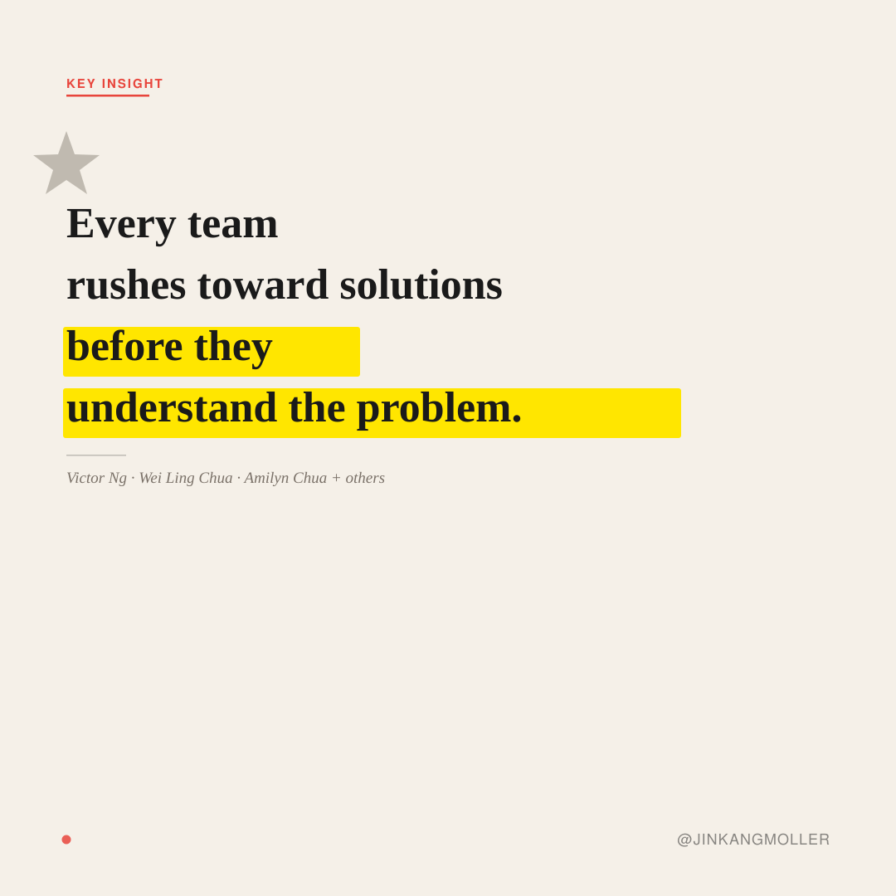

★ Key Insight
Divergent
Empathy
Instinct to Solve
·
Premature Convergence
The most consistent shift across all cohorts. Named by Victor Ng (quality engineering), Wei Ling Chua (IRAS), Amilyn Chua, and many others — every background, same default pattern.